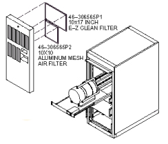

Operating Documentation
Direction 5133315-3, Rev# 14
Signa EXCITE HD 1.5T Service Methods
Module Version 1.0, Version Date 5/15/07
Operating Documentation |
| Required Persons | Preliminary Reqs | Procedure | Finalization |
|---|---|---|---|
| 1 | Not Applicable | Not Applicable | Not Applicable |
Signa TwinSpeed 9.X & 10.X Accessory Cabinets use forced air cabinet cooling. The cabinet air passes through impregnated air filters (46-306565P1 & 46-306565P2) that must be replaced as necessary to assure proper cabinet cooling. See Illustration 1
Turn recessed screw at top center of cover 1/4 turn counterclockwise to release cover latch. See Illustration 1
Tilt top cover forward and lift up and out to remove cover for access to filters
Lift bottom of filter frame up and out to remove filters from cover
Inspect filters for dust build up and replace as required. If replacement is not necessary proceed to Step 7
Apply coating of Filter adhesive (46-241301P1060) to inlet side of new filter before installation
Orient replacement filter with inlet side toward grill opening on cover and place top edge into opening under retaining lip
Slide filter upward underneath retaining lip until bottom clears lower retaining lip. Lower filter into slot
Replace cover on cabinet by inserting lower cover lip behind trim strip at bottom of cabinet and swinging top of cover into spring loaded “slam latch”
Illustration 1: Twin Accessory Cabinet Filter Locations

No finalization steps.